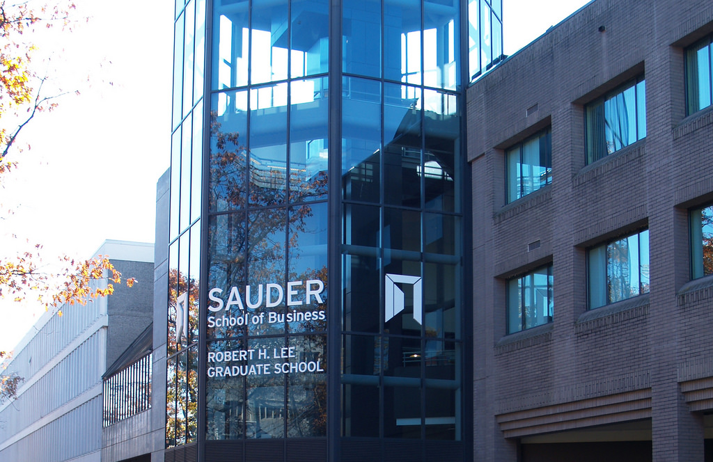
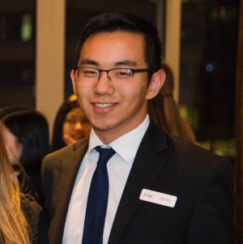

PROSPER
VANCOUVER
Prosper Vancouver
06.02.18 | Sauder School of Business
Greetings,
Our names are Dania Shaeeb and Jeffrey Guo and we have the great honour of serving as your chairs for Prosper Vancouver 2018. When we first leaped into the world of business conferences and competitions, we couldn't imagine the doors that business would open for us. Throughout the years, we have had so many opportunities to explore and develop our passion in business, and now we wish to inspire others to pursue the same. These conferences have helped us come out of our shell only to be greeted by the kindest people We ever met. These people, who we delighted to call our best friends, have nurtured us and helped us grow into a strong, hard working, and ambitious people who will go above and beyond to make Prosper Vancouver one of the best business conferences in the Lower Mainland.
When we started out as a young participants and competitors in various businesses conferences, there was no doubt that we felt nervous and somewhat confused. After attending our first ever conference, however, we came out feeling more confident and determined than ever. Everyone was understanding and caring, guiding me throughout the entire course. We quickly adapted to the rhythm of the conference and had made some of my best memories there. At Prosper, our team strives to do the same for all participants, old and new. We want to make this a welcoming and fun experience where all participants regardless of experience are able to grow, connect with one another, and make lasting memories for a lifetime.
The Prosper Vancouver 2018 team can't wait to meet all of you; we'll be waiting for you at the doors. Good luck to everyone and we hope to see everyone in June!
Sincerely,
Jeffrey Guo & Dania Shaeeb | Co-Chairs
Prosper Vancouver 2018
Create.
Evaluate.
Prosper.
Prosper is an up and coming business case competition located in the lower mainland. It is our hope to let the youth experience solving real cases with practical and creative recommendations as well as forming networks. Business mentors from all the over world will be attending not only to speak, but to help the youth deepen their understanding or passion for business.
Register Now

Create. Evaluate. Prosper.
Prosper is an up and coming business case competition located in the lower mainland. It is our hope to let the youth experience solving real cases with practical and creative recommendations as well as forming networks. Business mentors from all the over world will be attending not only to speak, but to help the youth deepen their understanding or passion for business.
Register NowKeynote and Workshop Speakers
Wilson Lee
Keynote Speaker
A successful young serial entrepreneur. Wilson has received multiple awards, such as the Top 30 Under 30, one of the top Young Entrepreneurs award from The Richmond Chamber of Commcerce (RCC), Top 10 Emerging Entrepreneurs from Small Business BC, New Business of the Year award from RCC to name a few. He runs an event production company and an ice-cream chain. His current focus is helping Entrepreneurs achieve their financial Freedom by leveraging Amazon and Facebook. Follow his podcast where he shares golden nuggets each week, www.ActualizeFreedom.com
Matt Bonshor
Workshop Speaker
Matt is the Business Development Manager at RED Academy, helping with sales and marketing efforts as well as building scalable systems to support RED's international growth. Prior to joining RED, Matt worked as an Associate at CC&L Investment Management, one of Canada's largest asset managers. Outside of work, you'll find Matt playing beach volleyball at Kits beach. Matt is a firm believer in the power of mindfulness and working for causes that are true to your values. Feel free to connect with Matt Bonshor to chat on LinkedIn at matthewbonshor

Kevin Nan
Workshop Speaker
Kevin Nan is a first-year student on a full ride Major Entrance Scholarship at the UBC Sauder School of Business. An avid participant in case competitions, Kevin won Illuminate Vancouver in 2015, chaired MiniEnterprize in 2017, and in university, placed as a regional finalist at KPMG’s Ace the Case, semi-finalist at the National Strategy Consulting Competition, and second at Imprint, sponsored by Evo. He will be chairing the National Strategy Consulting Competition & Conference in November 2018.
Adrian Moise
Workshop Speaker
Adrian is the founder and chief executive officer (CEO) at Aequilibrium Software Inc., a software development and product design company that helps financial institutions (FIs) and FinTechs create seamless and personalised 'phygital' experiences that attract and engage customers. Aequilibrium uses domain, product and technical expertise to accelerate digital innovation and transform user experiences into rich life experiences. By building seamless and immersive digital solutions, Aequilibrium empowers FIs to deliver more intelligent and meaningful interactions across every customer touchpoint, leading to engaged and loyal customers and brand advocates. Aequilibrium has been shortlisted two years in a row as one of the Top 5 Best Employers in BC. Aequilibrium grew 350% in 2017, and it is on-track to grow 200% in 2018 - double its revenue, staff, customer base, and number of offices.
Hussein Hallak
Workshop Speaker
Hussein is a serial entrepreneur with over 25 years of extensive business experience, built more than 20 startups, mentored and trained thousands of entrepreneurs. A sought-after speaker, startup advisor, and mentor, he is the creator of the Make the LEAP keynote, Intro to Blockchain workshop, and Intro to Startups email course delivered to thousands of entrepreneurs around the world. Featured in Forbes, BBC, Entrepreneur, Roundhouse Radio, and Notable, Hussein leads international growth at Launch Academy, one of North America's leading tech incubators with over 500 startups incubated and $150+ Million raised. Hussein is passionate about tech, impact, blockchain and decentralized innovation, and he lives to inspire entrepreneurship and unleash breakthrough growth through connection, collaboration, and community.
Kevin Imrie
Workshop Speaker
Kevin is not quite fancy enough to warrant a biography, but since he was asked it should be noted that he is a graduate of Queen's University and a Technical Recruiter for Amazon Web Services where he has helped them quadruple in size in Vancouver in the last 18 months. He has specialized in both technical and sales recruitment throughout his career and worked with over a dozen multi-million dollar businesses and business units to build their talent growth and acquisition strategies. His focus is on helping individuals of all career levels find their right next step and providing advice about job markets across North America and helping companies hire intelligently. He is awkward about typing in the third person, passionate about public policy as it relates to immigration, mental health and education and is always available to provide a recruiters perspective to young people navigating their education and the start of their professional lives. He also has a few really awesome mixes on 8tracks, which he thinks is cool but probably actually isn't.
Business Case Competition
what is a case competition?
A business case competition is a competition that helps gain and strengthen the skills essential for youth as they enter the world of business. At Prosper, we aim to develop these important skills, such as critical thinking and public speaking, that are needed to guarantee success in your future careers. Our mission is to engage youth in the world of business through workshops, panels from professionals, and case competitions. Whether you are interested in accounting, marketing, data analysis, and business in general, our conference has an array of activities for everyone. We recognize that each individual is unique, and we each have certain interests. That is why we incorporate the whole package, and at Prosper Vancouver you will get a taste of all that business can offer.
How does it work?
- You will be in a team of 3-5 people
- You and your teammates will be given MINIMUM TIME to read over the case study and prepare your presentation
- Your team will be presenting in front of business experts and Sauder students who will critique on your Presentation
- After the first Presentation, 4 teams will be picked to the final round of the Competition
conference
where
UBC Sauder School of Business
2053 Main Mall, Vancouver, BC V6T 1Z2
when
Saturday 8AM June 2, 2018
| Schedule | |
|---|---|
| Registration | 8:45 am - 9:30 am |
| Beginner Workshop | 9:00 am - 9:30 am |
| Opening Ceremony | 9:45 am - 10:10 am |
| Workshop A | 10:15 am - 10:45 am |
| Workshop B | 10:50 am - 11:20 am |
| Lunch | 11:30 am - 12:30 am |
| Case Preparation | 12:30 am - 2:15 pm |
| Presentation | 2:15 pm - 3:30 pm |
| Finals Preparation | 3:45 pm - 4:15 pm |
| Finals Presentation | 4:20 pm - 5:00 pm |
| Closing Ceremony | 5:10 pm - 6:00 pm |
Volunteer
Join our team
Prosper Vancouver 2018 will be held on the 2nd of June at UBC Sauder School of Business from 8:45AM to 6PM. A conference volunteer's responsibilities will include: setting up/taking down rooms and halls, moderating case competitions, and any other related logistical tasks. We expect you to arrive at the conference between 8:30 AM and 9:00 by the latest. Lunch will be provided for you at the conference. Volunteers are expected to stay for the entire conference, but if you aren't able to, please indicate your modified schedule at the end of the form.
Apply for volunteer
Our Team

Jeffrey Guo
Co-chair
Emilie Beaudoin
Internal Affairs
Alex Oh
Director of Human Resources
Kevin Wang
Director of Logistics

Andy Hwang
Director of Finance
Kathleen Kong
Director of Administration
Navraj Powar
Director of Information Technology
Jiro Luat
Co-Marketing Director
Honey Martinez
Co-Marketing Director
Internal Team
Injoon Youn | Photo Lead
Isabela Moise | Internal
Albert Chen | Internal
Branch Ambassadors
Roy Han | Burnaby
Helen Yang | Delta
Maggie Chen | New Westminister
Jason Chen | North Shore
Hasan Altaf | Richmond
Annie Guo | Richmond
Andy Nguyen | Tri-Cities
Jonathan Song | Vancouver
Cindy Gao | Vancouver
Sponsorships
Message From The Director of Finance
This year remarks the first iteration of Prosper. Prosper is one of the up and coming business case competitions located in the lower mainland. As a non-profit organization, it is our hope to let the youth experience solving real cases with practical and creative recommendations. Business mentors from all over the world will be attending not only to speak but to help the youth deepen their understanding and passion for business.
We aim to provide a sponsor with recognition opportunity Prosper is a recent startup case competition located in the lower mainland. This year will remark the first iteration. Prosper’s competitors are first rated students, entrepreneurs, and leaders of the coming future. Our case competition provides a perfect breeding ground for you to grow your business and to allow your business to gain greater exposure. Moreover, if you were to support Prosper, along with the rest of the executive team will ensure the best promotion for your business or product. Your contribution whether monetary or product related will aid our competitors in establishing the best possible experience.
We greatly appreciate your support towards Prosper Vancouver.
Your support via a discount on your items, and free merchandise supporting our event will also be accepted.
Sincerely,
Andy Hwang | Director of Finance
Sponsorship Package
UBC Sauder
prosper
vancouver
Contact Us
Instagram
@prospervancouver
E-mail
prospervancouver@gmail.com
Dania Shaeeb | Co-Chair
dshaeeb@gmail.com
Jeffrey Guo | Co-Chair
guojmultiply24@gmail.com